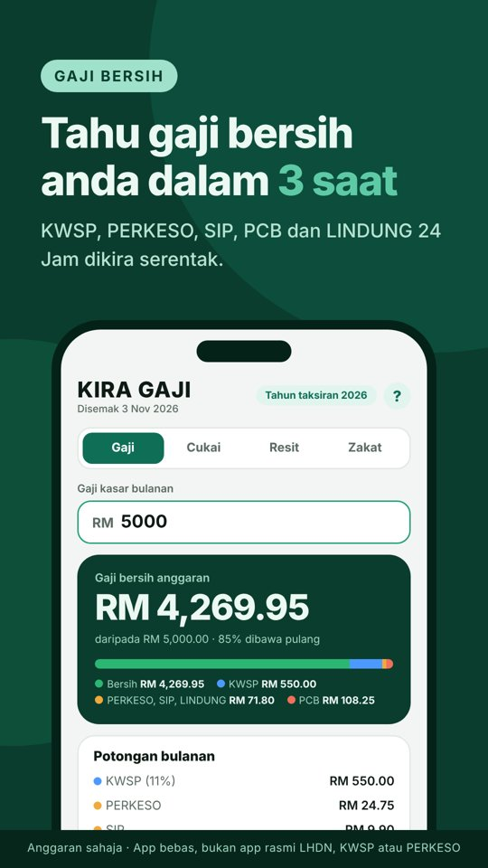
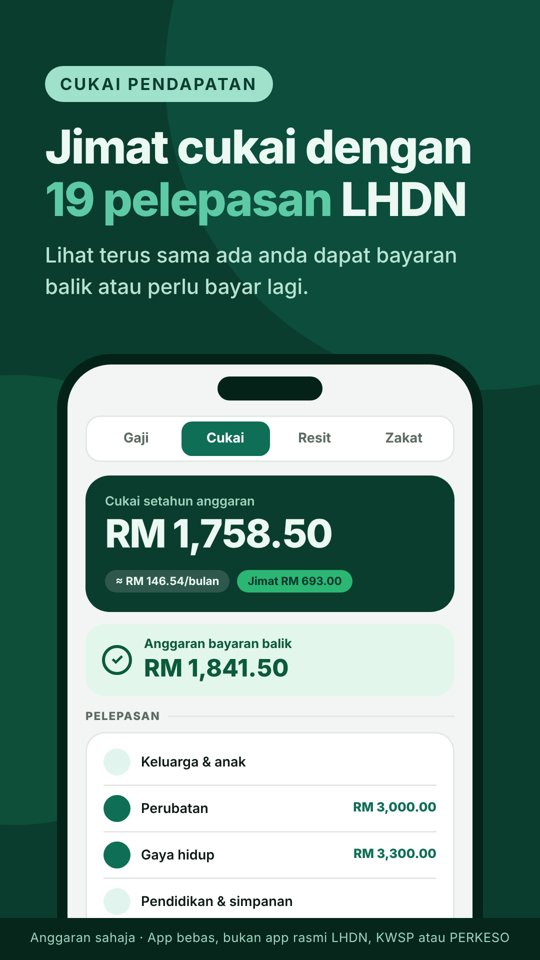
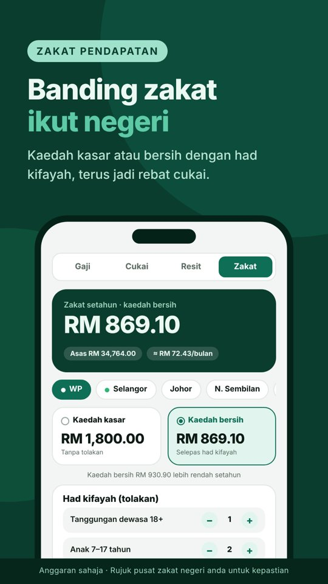

Apa yang app ini kira
Gaji bersih
KWSP, PERKESO, SIP, LINDUNG 24 Jam dan PCB anggaran. Sokong pekerja bawah 60 dan 60 tahun ke atas.
Cukai pendapatan
19 pelepasan TT2025 dengan had automatik, serta anggaran bayaran balik atau baki selepas PCB.
Simpan resit
Gambar resit dalam folder ikut kategori pelepasan, terus masuk kiraan cukai, dan jana PDF A4 untuk e-Filing.
Zakat pendapatan
Nisab ikut negeri, kaedah kasar dan bersih, dan terus jadi rebat cukai.